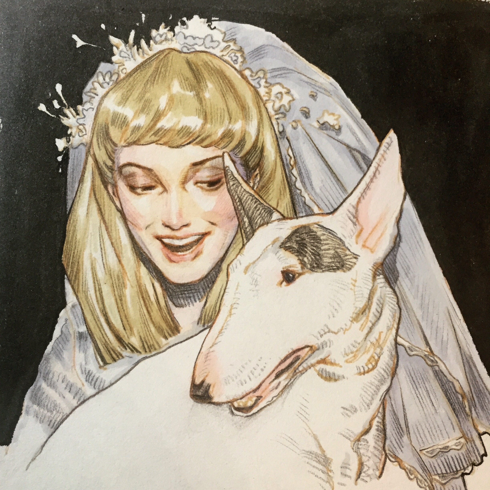
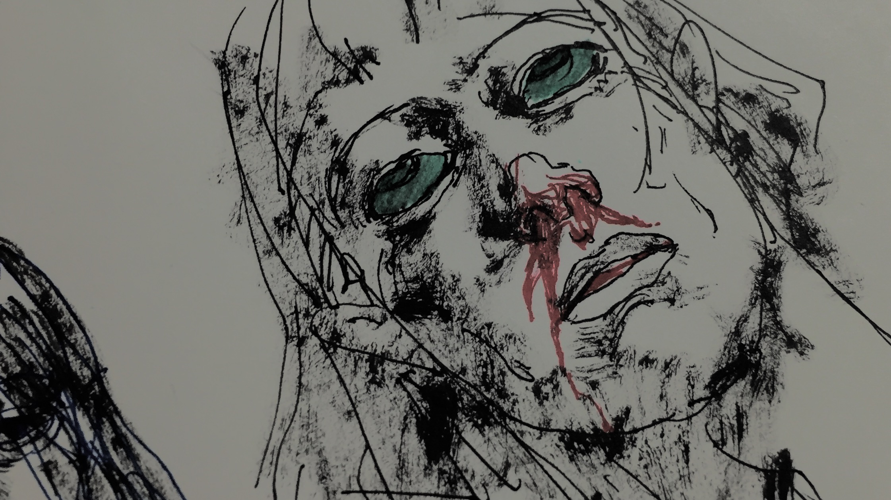
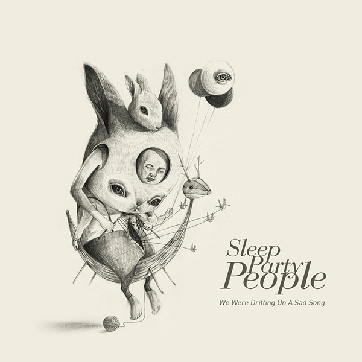
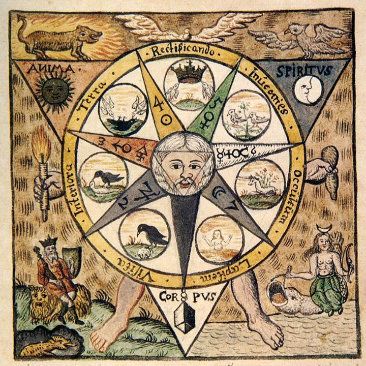
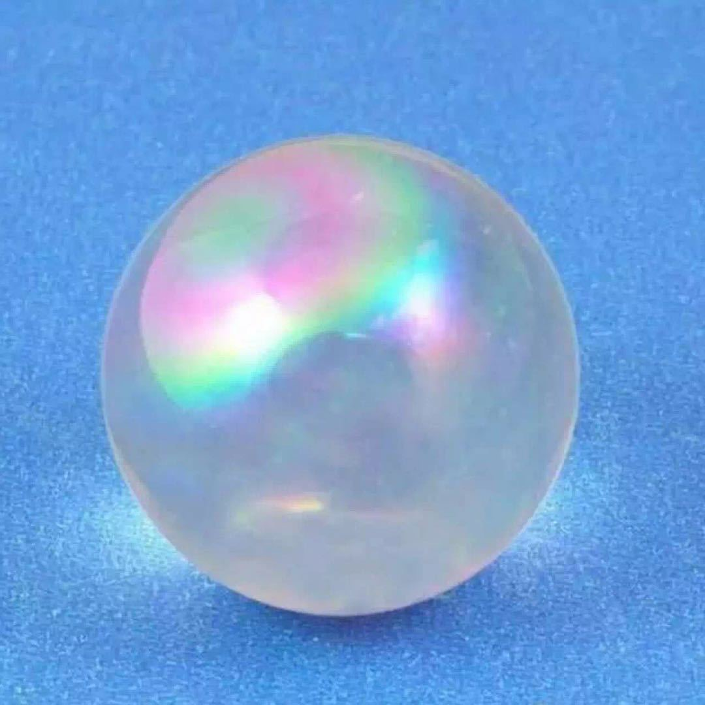

In that wild throb when all existences
Seemed narrowed to one single ecstasy
Which dies through its own sweetness and the stress
Of too much pleasure, ere Persephone
Had bade them serve her by the ebon throne
Of the pale God who in the fields of Enna loosed her zone.

Ah! sweet indeed to rest within the womb
Of Earth, great mother of eternal sleep,
But sweeter far for thee a restless tomb
In the blue cavern of an echoing deep,
Or where the tall ships founder in the gloom
Against the rocks of some wave-shattered steep.

See what a mass of gems the city wears
Upon her broad live bosom! row on row
Rubies and emeralds and amethysts glow.
See! that huge circle like a necklace, stares
With thousands of bold eyes to heaven, and dares
The golden stars to dim the lamps below,
And in the mirror of the mire I know
The moon has left her image unawares.

Think how the hidden things that poets see
In amber eves or mornings crystalline,
Hide in the soul their constant quenchless light,
Till, called by some celestial alchemy,
Out of forgotten depths, they rise and shine
Like buried treasure on Midsummer night.

To see the moment holds a madrigal,
To find some cloistered place, some hermitage
For free devices, some deliberate cage
Wherein to keep wild thoughts like birds in thrall;
To eat sweet honey and to taste black gall,
To fight with form, to wrestle and to rage,
Till at the last upon the conquered page
The shadows of created Beauty fall.